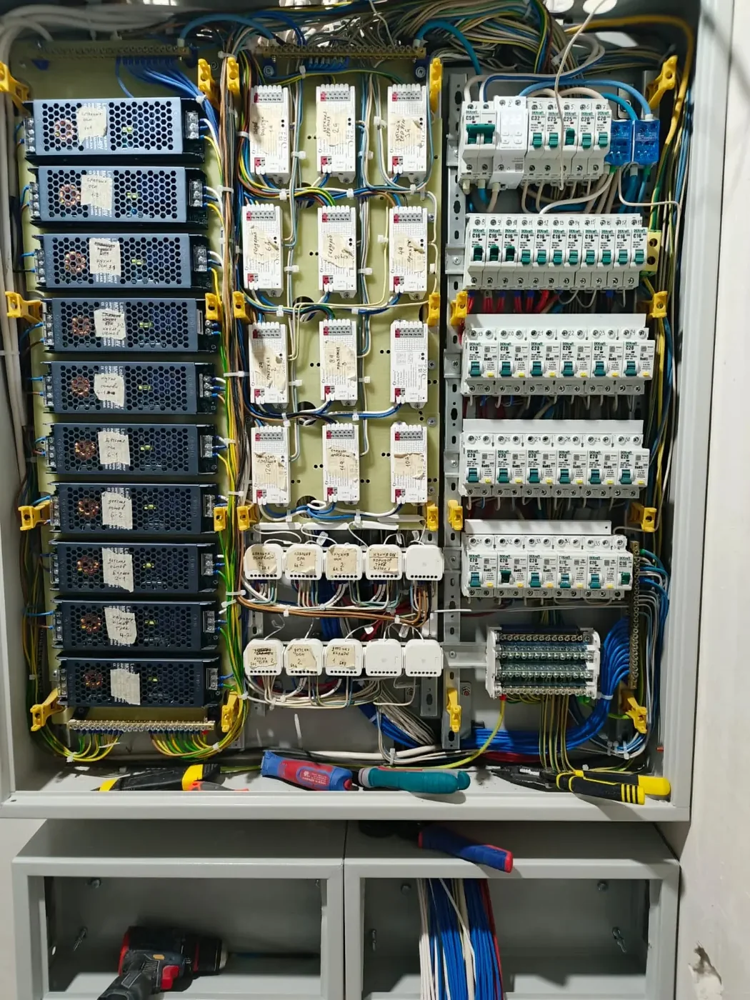

Коммерческие помещения
Электромонтаж коммерческого помещения: что входит и как подготовиться к расчету
Для офиса, магазина, сервиса или небольшого коммерческого объекта электрика должна быть не просто “разведена”, а рассчитана под реальные нагрузки, график ремонта и дальнейшую эксплуатацию помещения.

Какие объекты обычно требуют полноценного электромонтажа
К коммерческим объектам относятся офисы, магазины, пункты выдачи, салоны, сервисные зоны, небольшие склады, мастерские и помещения под арендатора. В таких задачах важно заранее понять режим работы, нагрузку оборудования и требования арендодателя или управляющей компании.
Мелкие разовые работы редко решают проблему системно. Если помещение готовится к открытию, правильнее сразу спланировать щит, группы линий, освещение, рабочие места, технологическое оборудование и запас на развитие.
Что входит в работы под ключ
- Осмотр помещения, уточнение задач и сбор исходных данных.
- Разделение нагрузок на группы: освещение, розетки, оборудование, вентиляция, серверная или кассовая зона.
- Прокладка кабельных линий в лотках, трубах, гофре или штробах в зависимости от объекта.
- Сборка и подключение распределительного щита.
- Монтаж розеток, выключателей, освещения, силовых точек и линий для оборудования.
- Проверка линий перед включением и подготовка объекта к эксплуатации.
Что влияет на стоимость
Главные факторы - площадь, количество рабочих мест, мощность оборудования, длина кабельных трасс, требования к щиту, доступность потолков и стен, сроки запуска и возможность работать на объекте без остановки бизнеса.
Отдельно нужно учитывать оборудование с повышенной нагрузкой: печи, компрессоры, насосы, вентиляцию, кондиционирование, станки, зарядные устройства, серверное оборудование и наружные вывески.
Что прислать для предварительного расчета
Для первичной оценки достаточно плана помещения, фото объекта, списка оборудования, желаемых сроков и понимания, есть ли действующий щит. Если есть техническое задание от арендодателя или проект, его лучше приложить сразу.
Нужно рассчитать электромонтаж коммерческого помещения?
Пришлите план, фото и список оборудования. Подскажем, каких данных достаточно для предварительной сметы.
Оставить заявку